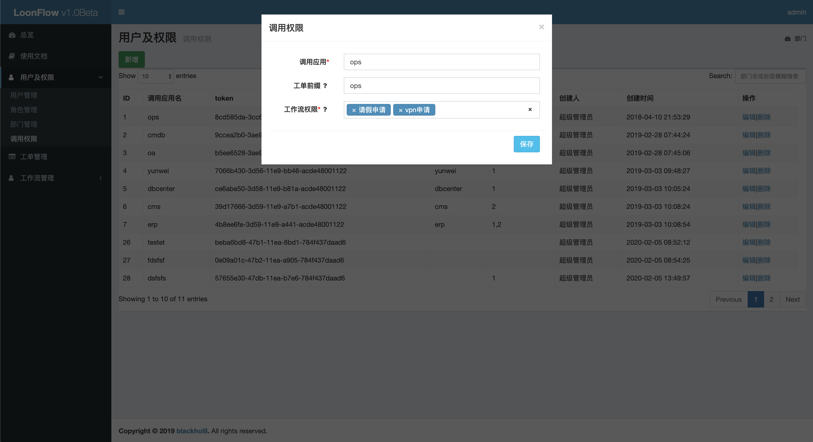

用户及权限相关管理只有超级管理员用户才有权限查看或者编辑
用户管理¶
loonflow管理后台提供的用户管理功能适用于开始的功能测试，或者账户信息微调。建议通过定时任务程序实现企业账户信息往loonflow的同步 (直接操作loonflow的数据库,非管理员用户无需登录loonflow,密码随便设置)。管理人员可同步后重置登录密码。管理分为两类： 超级管理员、工作流管理员
超级管理员： 拥有loonflow管理后台所有功能的权限, 包括工作流管理员的所有权限
工作流管理员：允许登录loonflow管理后台拥有工作流配置及对应有权限工作流的相关管理功能

角色管理¶
此处角色管理可以定义一系列角色来作为工作流配置中状态的处理人。如可以定义一线处理人、pc故障维修人等等角色。如果你需要这个角色与公司 的用户体系一致，建议通过定时任务脚本直接操作loonflow的数据库来实现


调用权限¶
loonflow给每个调用方应用分配一个token,用于生成调用时请求头中的签名。同时可以限定每个应用可以操作的工作流列表， 以及定义每个应用创建工单时，工单流水号的规则。
调用应用：建议用英文字母，如客服系统调用可以用kefu,oa系统调用可以用oa
工单前缀: 用于指定生成工单的流水号规则，如设定为kefu,则生成的流水号为kefu_202003080001
工作流权限: 指定使用此应用调用loonflow接口时，可以操作的工作流列表，创建工单时只能选择这些工作流，查看工单列表时也只能选择这些类型的工单
